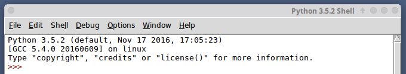

Programmer un ordinateur, c'est quoi ?
Programmer, c'est créer des programmes (suite d'instructions données à l'ordinateur) ! Un ordinateur sans programme ne sait rien faire. Il existe différents langages qui permettent de programmer un ordinateur, mais le seul directement utilisable par le processeur est le langage machine (suite de 1 et de 0). Aujourd'hui (presque) plus personne ne programme en langage machine (trop compliqué).
Les informaticiens utilisent des instructions (mots souvent en anglais) en lieu et place de la suite de 0 et de 1. Ces instructions, une fois écrites par le programmeur, sont « traduites » en langage machine. Un programme spécialisé assure cette traduction. Ce système de traduction s'appellera interpréteur ou bien compilateur, suivant la méthode utilisée pour effectuer la traduction.
Il existe 2 grandes familles de langages de programmation :
- Les langages de bas niveau sont très complexes à utiliser, car très éloignés du langage naturel, on dit que ce sont des langages « proches de la machine », en contrepartie ils permettent de faire des programmes très rapides à l'exécution. L'assembleur est le langage de bas niveau. Certains "morceaux" de programmes sont écrits en assembleur encore aujourd'hui.
- Les langages de haut niveau sont eux plus "faciles" à utiliser, car plus proches du langage naturel (exemple : si a=3 alors b=c). Exemples de langages de haut niveau : C, C++ , Java, Python...
En NSI, notre langage de prédilection sera Python.
Pour écrire nos programmes, nous utiliserons dans la plupart des cas l'éditeur fourni par défaut avec Python : IDLE (nous aurons peut-être l'occasion d'utiliser un éditeur plus "perfectionné" : Spyder)
Prise en main d'IDLE
Une fois IDLE lancé, vous devriez obtenir quelque chose qui ressemble à cela :
Dans le menu File, choisissez New Window (ou, selon la version, New file), une fenêtre apparaît.
À faire vous-même 1
Dans la fenêtre qui vient de s'ouvrir, saisissez l'instruction suivante :
print("hello world !")
puis appuyez sur la touche F5 du clavier (ou dans le menu "Run", choisissez "Run Module")
IDLE va vous demander d'enregistrer le programme, enregistrez-le dans un dossier qui vous servira de dossier de travail.
Vous devez voir le message "hello world !" apparaître dans la seconde fenêtre
Notion de variable
Définition du mot ordinateur d'après "Le Petit Larousse" :
"Machine automatique de traitement de l'information, obéissant à des programmes formés par des suites d'opérations arithmétiques et logiques."
Qui dit "traitement de l'information", dit donc données à manipuler. Un programme "passe" donc son temps à traiter des données. Pour pouvoir traiter ces données, l'ordinateur doit les ranger dans sa mémoire (RAM - Random Access Memory). La RAM se compose de cases dans lesquelles nous allons ranger ces données (une donnée dans une case). Chaque case a une adresse (ce qui permet au processeur de savoir où sont rangées les données).
Alors, qu'est-ce qu'une variable ?
Eh bien, c'est une petite information (une donnée) temporaire que l'on stocke dans une case de la RAM. On dit qu'elle est "variable" car c'est une valeur qui peut changer pendant le déroulement du programme.
Une variable est constituée de 2 choses :
- Elle a une valeur : c'est la donnée qu'elle "stocke" (par exemple le nombre entier 5)
- Elle a un nom : c'est ce qui permet de la reconnaître. Nous n'aurons pas à retenir l'adresse de mémoire, nous allons juste indiquer des noms de variables à la place.
i = 12
Grâce à cette ligne, nous avons défini une variable qui porte le nom i et qui "contient" le nombre entier 12. Plus précisément, nous dirons que la variable i référence le nombre entier 12.
À faire vous-même 2
À l'aide d'IDLE, testez le code suivant :
point_de_vie = 15
print(point_de_vie)
Comme vous pouvez le constater, l'instruction print permet d'afficher la valeur référencée par la variable "point_de_vie".
À faire vous-même 3
Écrire un programme dans lequel on attribue la valeur 12 à la variable "point_de_force". La valeur de "point_de_force" doit ensuite s'afficher à l'écran. Testez votre programme.
Nous venons de voir qu'une variable peut référencer un nombre entier mais elle peut aussi référencer un nombre à virgule :
i = 5.2
Prenez bien garde, nous utilisons un point à la place d'une virgule (convention anglo-saxonne).
Une variable peut donc référencer plusieurs types d'entités (pour l'instant nous n'en avons vu que deux, mais nous en verrons d'autres plus loin) : les nombres entiers ("integer" en anglais, abrégé en "int") et les nombres à virgule ("float" en anglais). Il est possible de connaitre le type de l'entité référencé par une variable à l'aide de l'instruction "type".
À faire vous-même 4
Testez le code suivant :
a = 5.2
b = 12
print(type(a))
print(type(b))
Comme vous pouvez le constater, ce programme permet d'afficher le type de la grandeur référencé par la variable a et le type de la grandeur référencé par la variable b (pour l'instant ne vous préoccupez pas du terme "class" situé devant le "int" et le "float").
Un peu de calculs
Un ordinateur est bien évidemment capable d'effectuer des opérations mathématiques (arithmétiques).
Les signes utilisés sont classiques : +, - , * (multiplication), / (division), // (division euclidienne) ou encore % (modulo : reste d'une division euclidienne).
Il est tout à fait possible d'effectuer des opérations directement avec des nombres, mais il est aussi possible d'utiliser des variables.
À faire vous-même 5
Essayez d'écrire un programme qui additionnera le contenu de 2 variables (nom des variables : a et b). Le résultat de cette opération devra être "rangé" dans une troisième variable (resultat). Votre programme devra afficher le contenu de la variable resultat. Testez votre réponse en exécutant le Programme.
À faire vous-même 6
D'après vous, que fait ce programme ?
a = 11
print(a)
a = a + 1
print(a)
Vérifiez votre réponse en exécutant le Programme.
Détaillons ce qui se passe dans le "À faire vous-même 6":
- nous créons une variable "a" qui référence l'entier 11
- nous affichons à l'écran la valeur référencée par "a" (c'est-à-dire 11)
La suite est un peu plus complexe, mais très importante à comprendre. Il va falloir lire la ligne "a = a + 1" de droite à gauche, décortiquons cette ligne :
- "a + 1" : nous prenons la valeur actuelle de a (c'est-à-dire 11) et nous ajoutons 1 à 11, à droite de l'égalité nous avons donc maintenant la valeur 12
- nous attribuons la valeur qui vient d'être calculée à la variable "a"
- nous affichons à l'écran la nouvelle valeur référencée par "a"
Ce raisonnement peut être généralisé pour éviter des erreurs parfois difficiles à corriger : dans une égalité, commencer toujours par évaluer l'expression se trouvant à droite du signe égal.
exposant, racine carrée, fonctions trigonométriques
Il est aussi possible d'effectuer des calculs plus complexes en utilisant par exemple des exposants, des racines carrées, des fonctions trigonométriques...
Pour utiliser ces fonctions mathématiques plus avancées, il est nécessaire d'ajouter une ligne au début de votre programme :
import math
Cette ligne permet d'importer (et donc d'utiliser) le module "math" (ce module contient toutes les fonctions mathématiques "classiques").
Voici quelques exemples :
- math.pow(x,a) permet de calculer x à la puissance a
- math.cos(x) permet de calculer le cosinus de l'angle x (l'angle x doit être en radian) (nous avons la même chose pour le sinus ou la tangente)
- math.sqrt(x) permet de calculer la racine carrée de x
Si vous avez besoin d'autres fonctions mathématiques, je vous invite à consulter la documentation de Python : https://docs.python.org/3/library/math.html
À faire vous-même 7
Qu'est-ce que le programme suivant va permettre d'afficher à l'écran ? Validez votre réponse à l'aide d'IDLE.
import math
a = 5
b = 16
c = 3.14 / 2
d = math.pow(a,2)
e = math.sqrt(b)
f = math.sin(c)
print(d)
print(e)
print(f)
À noter qu'il est tout à fait possible de "mélanger" des nombres entiers et des nombres à virgules ("3.14 / 2") dans une opération.
À faire vous-même 8
Écrire un programme permettant de répondre à la question suivante : "Quel est le type du résultat d'une addition d'un integer et d'un float"
chaînes de caractères
Les variables peuvent aussi référencer des suites de caractères, que l'on appelle "chaîne de caractères".
À faire vous-même 9
Tester le code suivant
ma_chaine = "Bonjour le monde !"
print(ma_chaine)
La variable "ma_chaine" référence la chaîne de caractères "Bonjour le monde !"
Le signe + et les chaînes de caractères
L'utilisation du signe + ne se limite pas à l'addition. Il est aussi utilisé pour la concaténation.
D'après Wikipédia :
« Le terme concaténation (substantif féminin), du latin cum («avec») et catena(«chaîne, liaison»), désigne l'action de mettre bout à bout au moins deux chaînes. »
Comme vous avez pu le deviner en lisant la définition ci-dessus, la concaténation va concerner les chaînes de caractères.
À faire vous-même 10
Qu'est-ce que le programme suivant va permettre d'afficher à l'écran ? Validez votre réponse en testant ce programme.
a = "Hello"
b = "World"
mon_expression = a + b
print(mon_expression)
chaînes de caractères et variables
Nous avons vu que l'instruction "print" permettait d'afficher une chaîne de caractère ou le contenu référencé par une variable. Il est aussi possible de combiner dans un même "print" une chaîne de caractères et une ou plusieurs variables :
À faire vous-même 10
Testez le code suivant :
ma_chaine_1 = "Bonjour "
ma_chaine_2 = "le "
print(ma_chaine_1 + ma_chaine_2 + "monde!")
Les 2 variables "ma_chaine_1" et "ma_chaine_2" référencent 2 chaîne de caractères, nous avons donc ici une concaténation.
Mais que se passe-t-il si la variable référence un nombre (entier ou flottant) ?
À faire vous-même 11
Testez le code suivant :
mon_nombre = 5
print("Nombre de personnes : " + mon_nombre)
Comme vous pouvez le constater, nous avons droit à une erreur. En effet, il n'est pas possible de concaténer une chaîne de caractères et un nombre.
Python nous offre 2 solutions :
- l'utilisation de la méthode "str"
- l'utilisation des "fstring"
La méthode (nous verrons plus loin la notion de méthode) "str" permet de transformer un nombre en chaîne de caractères (si la transformation n'est pas possible, nous aurons une erreur)
À faire vous-même 11
Testez le code suivant :
mon_nombre = 5
print(type(mon_nombre))
mon_nombre = str(mon_nombre)
print(type(mon_nombre))
Il est possible d'utiliser la méthode "str" directement dans le "print" :
À faire vous-même 12
Testez le code suivant :
mon_nombre = 5
print("Nombre de personnes : " + str(mon_nombre))
Tout fonctionne, car maintenant nous avons bien une concaténation entre 2 chaînes de caractères.
Les "fstring" (nouveauté de Python 3.5), permettent de résoudre ce problème de combinaison variable-chaîne de caractères.
À faire vous-même 12
Testez le code suivant :
mon_nombre = 5
print(f"Nombre de personnes : {mon_nombre}")
Notez la présence du "f" juste avant le guillemet et des accolades qui encadrent le nom de la variable. Il est possible, dans une même chaîne de caractères d'avoir plusieurs noms de variable.
Les fonctions
Les fonctions permettent de décomposer un programme complexe en une série de sous-programmes plus simples. De plus, les fonctions sont réutilisables : si nous disposons d'une fonction capable de calculer une racine carrée, par exemple, nous pouvons l'utiliser un peu partout dans notre programme sans avoir à la réécrire à chaque fois (on parle de factorisation du code)
La notion de fonction en informatique est comparable à la notion de fonction en mathématiques.

Si nous avons y = 3x+2, pour une valeur donnée de x, nous aurons une valeur de y.
Exemple : x=4 donc y= 14 (y = 3.4+2=14, attention ici le point correspond au signe "multiplié").
La fonction en informatique est basée sur la même idée :

Voici la syntaxe employée en Python pour définir une fonction :
def nom_de_la_fonction(parametre):
instruction_1
instruction_2
return y
suite programme
La fonction renvoie la valeur contenue dans la variable y.
ATTENTION : Notez bien la présence du décalage entre la première ligne et les lignes suivantes. Ce décalage est appelé indentation, l'indentation permet de définir un bloc de code. Dans l'exemple ci-dessus, l'indentation nous permet de savoir que "instruction_1", "instruction_2" et "return y" constituent un bloc de code, ce bloc correspond au contenu de la fonction. "suite programme" ne fait pas partie de la fonction car il n'est pas indenté. Pour indenter du code, il y a 2 solutions : mettre 4 espaces ou utiliser une tabulation. En Python il est conseillé d'utiliser les 4 espaces, mais ce n'est pas une obligation. Une chose est sûre, une fois que vous avez choisi une méthode, n'en changé surtout pas au cours d'un même programme !
Codons notre exemple (y=3x+2) en créant une fonction "ma_fonction" :
def ma_fonction(x):
y = 3 * x + 2
return y
Pour "utiliser" la fonction "ma_fonction", il suffit d'écrire : ma_fonction (4) (dans ce cas précis, notre fonction renverra le nombre 14).
À faire vous-même 13
Testez le programme suivant :
def ma_fonction(x):
y = 3 * x + 2
return y
solution = ma_fonction(4)
print (f"La fonction renvoie {solution}")
Il faut savoir qu'au moment de l'exécution de votre programme le code "ma_fonction(4)" sera systématiquement remplacé par la valeur renvoyée par la fonction (toujours dans notre exemple le "ma_fonction(4)" sera remplacé par le nombre 14).
À faire vous-même 14
Codez en Python la fonction y = x2+2x+10
Il est possible de faire passer plusieurs paramètres à une fonction.
À faire vous-même 15
Quel est le résultat attendu après l'exécution du programme ci-dessous ?
def une_autre_fonction(x, b):
y = 3 * x + b
return y
resultat = une_autre_fonction(5, 3)
print(f"le résultat est : {resultat}")
Les paramètres peuvent être des chaînes de caractères (ainsi que la valeur retournée)
À faire vous-même 16
Quel est le résultat attendu après l'exécution du programme ci-dessous ?
def dit_bonjour(nom, age):
phrase = f"Bonjour {nom}, vous avez {age} ans."
return phrase
c1 = dit_bonjour("toto", 14)
c2 = dit_bonjour("titi", 17)
print(c1)
print(c2)
Attention : remarquez bien les guillemets autour des paramètres toto et titi (ce sont des chaînes de caractères)
Vérifiez votre réponse en exécutant ce programme.
Les paramètres ne sont pas obligatoires.
À faire vous-même 17
Testez ce programme :
def ma_fon():
return "voici une fonction qui ne sert à rien"
c = ma_fon()
print(c)
Il faut aussi savoir qu'une fonction ne renvoie pas forcément de valeur (le mot clé return n'est pas obligatoire). Mais si elle ne renvoie pas de valeur, que fait-elle ? Elle peut faire plein de choses, par exemple elle peut tout simplement afficher un texte. Sachez que dans certains langages, on utilise les termes méthode ou procédure pour qualifier une fonction "qui ne renvoie rien".
À faire vous-même 18
Soit le programme suivant :
def dit_bonjour(nom, age):
phrase = f"Bonjour {nom}, vous avez {age} ans."
print(phrase)
dit_bonjour("Toto", 14)
dit_bonjour("Titi", 11)
dit_bonjour("Tata", 7)
Quel est le résultat attendu après l'exécution de ce programme ? Vérifiez votre réponse en exécutant ce programme.
les expressions et les booléens
Si quelqu'un vous dit que "4 est égal à 5", vous lui répondez quoi ? "c'est faux". Si maintenant la même personne vous dit que "7 est égal à 7", vous lui répondrez bien évidemment que "c'est vrai".
En Python, ces deux «affirmations» ("4 est égal à 5" et "7 est égal à 7") s'écriront "4 == 5" et "7 == 7" (notez bien le double signe égal).
À faire vous-même 19
Testez ce programme
print(4 == 5)
En Python, "4 == 5" est appelé une expression, une expression est soit vraie ("True"), soit fausse ("False").
Pour l'instant nous avons vu deux grands types de données : les nombres (entier ou flottant) et les chaînes de caractères, il existe un troisième type tout aussi important que les deux premiers : les booléens. Un booléen est un type de données qui ne peut prendre que deux valeurs : vrai ("True") ou faux ("False"). Une expression (comme par exemple "4 == 5") est soit True, soit False.
ATTENTION : notez le double égal "==" qui permet de distinguer une expression et une affectation (référencement d'une valeur par une variable). Le fait de confondre le "simple égal" et le "double égal" est une erreur classique qu'il faut éviter.
À faire vous-même 20
Soit le programme suivant :
a = 4
b = 7
print(a == b)
a = 7
print(a == b)
Quel est le résultat attendu après l'exécution de ce programme ?
Il est possible d'utiliser aussi l'opérateur "différent de" !=
À faire vous-même 21
Soit le programme suivant :
a = 4
b = 7
print(a != b)
a = 7
print(a != b)
Quel est le résultat attendu après l'exécution de ce programme ?
Vérifiez votre hypothèse en testant ce programme.
Notez aussi l'existence des opérateurs :
- "strictement inférieur à" <
- "strictement supérieur à" >
- "inférieur ou égal à" <=
- "supérieur ou égal à" >=
À chaque fois ces opérateurs sont True (vrai) ou False (faux).
À faire vous-même 22
Soit le programme suivant :
a = 4
b = 4
print(a < b)
a = 7
print(a < b)
Quel est le résultat attendu après l'exécution de ce programme ?
Vérifiez votre hypothèse en testant ce programme
Les conditions
Nous allons maintenant étudier une structure fondamentale en programmation le « si ...... alors.......sinon........».
L'idée de base est la suivante :
si expression:
suite_instruction1
sinon:
suite_instruction2
Si "expression" est True alors "suite_instruction1" est exécuté et "suite_instruction2" est ignoré.
Sinon (sous-entendu que "expression" est False) "suite_instruction2" est exécuté et "suite_instruction1" est ignoré.
Notez l'indentation «suite_instruction1» et de « suite_instruction2»
À faire vous-même 23
Soit le programme suivant :
a = 4
b = 7
if a < b:
print("Je suis toto.");
print("Je n'aime pas titi.")
else:
print("Je suis titi.")
print("Je n'aime pas toto.")
print("En revanche, j'aime le Python.")
Quel est le résultat attendu après l'exécution de ce programme ?
Vérifiez votre hypothèse en testant le programme.
À faire vous-même 24
Écrire une fonction qui prend en paramètre un age. Si age est supérieur ou égal à 18 ans, la fonction devra renvoyer la chaîne de caractères "Bonjour, vous êtes majeur.". Si age est inférieur à 18 ans, la fonction devra renvoyer "Bonjour, tu es mineur."
À faire vous-même 25
Soit le programme suivant :
def annonce(num, prov, dest):
if dest != "0":
msg = f"le train n° {num} en provenance de {prov} et à destination de {dest}, entre en gare."
else:
msg = f"le train n° {num} en provenance de {prov} entre en gare. Ce train est terminus Triffouillis-les-Oies."
return msg
m_1 = annonce("4557", "Paris", "Marseille")
m_2 = annonce("5768", "Bonneville", "0")
print(m_1)
print(m_2)
Quel est le résultat attendu après l'exécution de ce programme ? Vérifiez votre réponse en testant ce programme.
À faire vous-même 26
Vous êtes gérant d'un magasin et vous désirez écrire un programme Python qui calculera automatiquement le montant de la facture des clients. Tout client qui achète au moins 5 fois le même article se voit octroyer une remise de 5 % (uniquement sur le montant de l'achat de cet article). Afin de simplifier le problème, on considère qu'un client n'achète qu'un seul type d'article. Écrire une fonction qui prend en paramètre le prix unitaire de l'article et le nombre d'articles achetés. Cette fonction doit renvoyer le montant de la facture.
Le "ou" et le "et"
Un if peut contenir plusieurs conditions, nous aurons alors une structure de la forme :
si expression1 op_logique expression2:
suite_instruction1
sinon:
suite_instruction2
« op_logique » étant un opérateur logique.
Nous allons étudier 2 opérateurs logiques : le "ou" (noté en Python "or") et le "et" (noté en Python "and").
Par exemple (expression1 or expression2) est vrai si expression1 est vraie et expression2 est vraie.
Autre exemple (expression1 and expression2) est faux si expression1 est vraie et expression2 est faux.
Les résultats peuvent être regroupés dans ce que l'on appelle une table de vérité :
| expression1 | expression2 | expression1 or expression2 |
|---|---|---|
| vrai | vrai | vrai |
| vrai | faux | vrai |
| faux | vrai | vrai |
| faux | faux | faux |
| expression1 | expression2 | expression1 and expression2 |
|---|---|---|
| vrai | vrai | vrai |
| vrai | faux | faux |
| faux | vrai | faux |
| faux | faux | faux |
À faire vous-même 27
Soit le programme suivant :
a = 5
b = 10
if a > 5 and b == 10:
print ("Toto")
else:
print("Titi")
if a > 5 or b == 10:
print ("Tata")
else:
print("Tutu")
Quel est le résultat attendu après l'exécution de ce programme ? Vérifiez votre réponse en testant ce programme.
La boucle while
La notion de boucle est fondamentale en informatique. Une boucle permet d'exécuter plusieurs fois des instructions qui ne sont présentes qu'une seule fois dans le code.
La structure de la boucle while est la suivante :
while expression:
instruction1
instruction2
suite programme
Tant que l'expression s'évalue à "True", les instructions à l'intérieur du bloc (partie indentée) seront exécutées.
À faire vous-même 28
Soit le programme suivant :
i = 0
while i < 10:
print(f"i vaut : {i}")
i = i + 1
print("C'est terminé.")
Quel est le résultat attendu après l'exécution de ce programme ? Vérifiez votre réponse en testant le programme
À faire vous-même 29
permettant de créer "un générateur automatique de punition" :
Écrire une fonction qui prendra 2 paramètres : une chaîne de caractère et un nombre entier
Par exemple :
Si on passe comme paramètres à notre fonction : "Je ne dois pas discuter en classe" et 3
La fonction devra permettre d'afficher :
Je ne dois pas discuter en classe
Je ne dois pas discuter en classe
Je ne dois pas discuter en classe
À faire vous-même 30
Écrire une fonction permettant d'afficher une table de multiplication. Cette fonction devra prendre en paramètre la table désirée.
Par exemple si l'on passe le paramètre 3 à la fonction, la fonction devra permettre d'afficher :
1 x 3 = 3
2 x 3 = 6
...
...
10 x 3 = 30